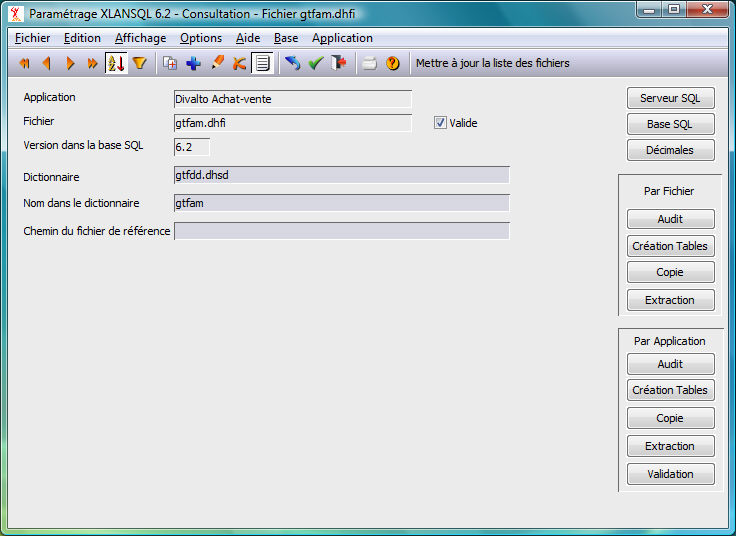

Le serveur XLANSQL, à l'ouverture d'un fichier sur le serveur SQL charge ses paramètres depuis le fichier FHSQL.dhfi du répertoire correspondant à la base SQL. S'ils n'existent pas ou si l'enregistrement paramètre n'est pas valide, XLANSQL renvoie un code erreur fichier absent.
Dans la fiche paramètre, XLANSQL trouve les informations suivantes :
Le nom du dictionnaire où se trouve la description du fichier. Par défaut, le dictionnaire est cherché dans le répertoire /Divalto/ « nom de base sql ».
Le nom du fichier dans le dictionnaire.
L'application à laquelle appartient le fichier.
La version des tables dans la base SQL. Celle-ci correspond au numéro de version pris dans le dictionnaire de données au moment de la création des tables.
L'indicateur de validité de la fiche paramètres.
